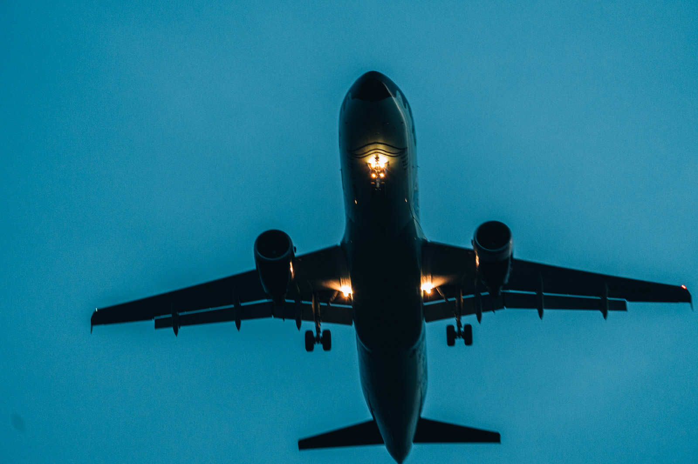
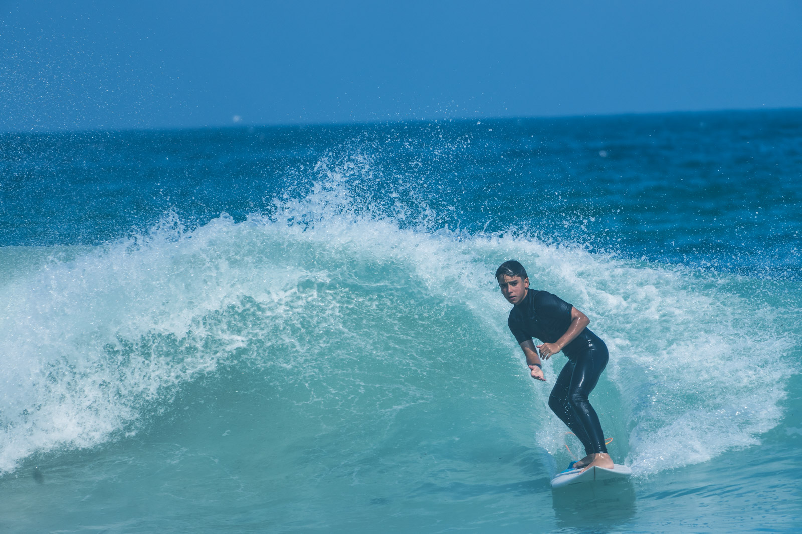
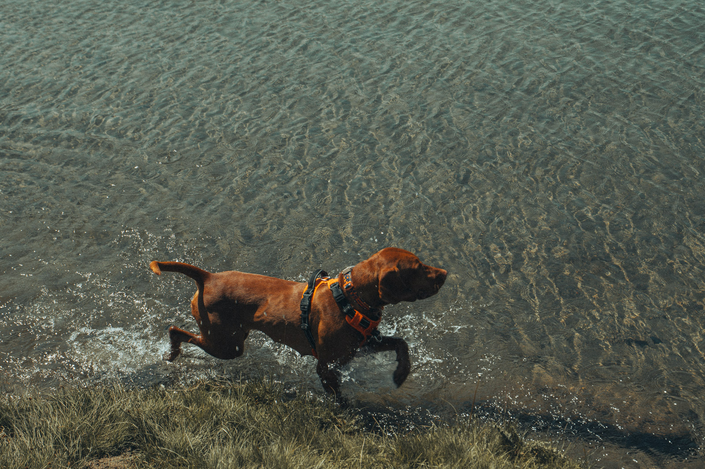
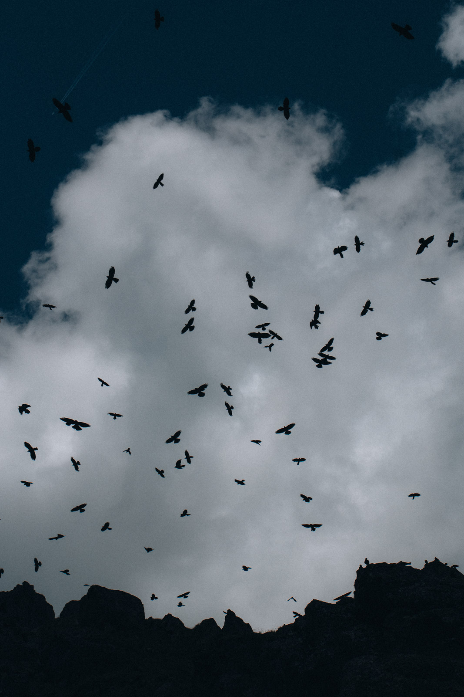
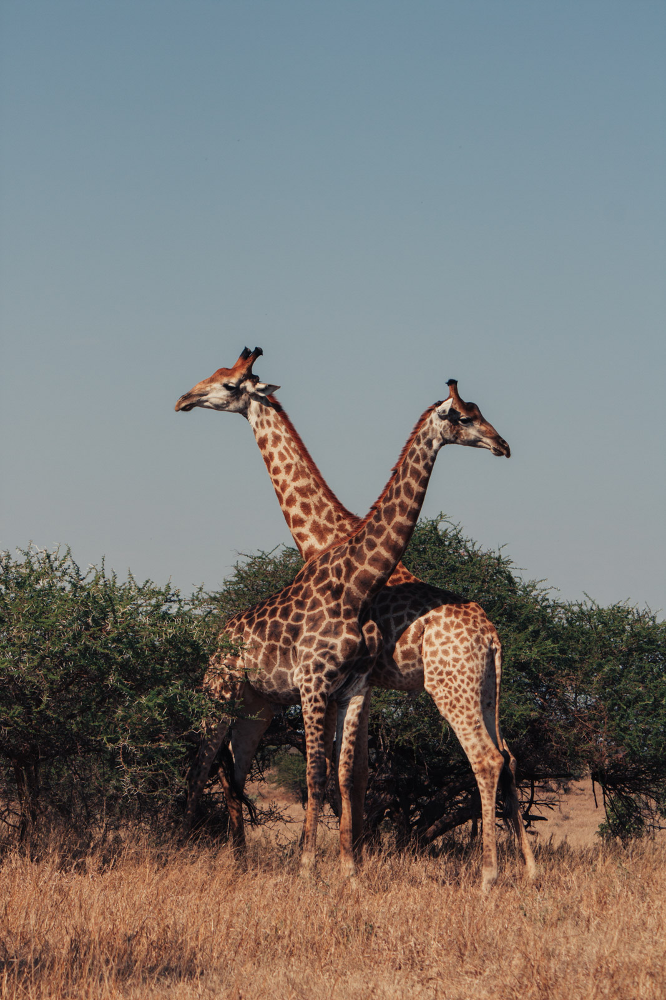

Il tempo dentro la foto
Una foto ferma un istante. Lo stesso luogo, con la stessa luce, un secondo prima o un secondo dopo è un'altra foto. Spesso peggiore.
Henri Cartier-Bresson lo chiamava il momento decisivo: l'istante in cui forma e contenuto si allineano. Non arriva per caso. Si prepara.
Il momento giusto non si cattura. Si aspetta, dopo averlo previsto.
Anticipare
Quasi tutto quello che si muove segue uno schema. Un'onda cresce e si rompe. Un cane torna verso chi lo chiama. Un aereo segue la sua traiettoria. Un uccello si posa sempre sullo stesso ramo.
- Osserva prima di scattare. Guarda la scena per qualche minuto. Cosa si ripete?
- Prepara inquadratura ed esposizione. Quando il momento arriva, non devi più pensare alla tecnica.
- Scatta un attimo prima. Tra quando decidi e quando la fotocamera scatta passano frazioni di secondo. Il tuo cervello è più lento di quanto credi.

La raffica
La raffica scatta molte foto al secondo finché tieni premuto. È uno strumento, non una strategia. Se non hai anticipato, scatterai venti foto del momento sbagliato.
- Usala in brevi scatti di uno o due secondi, centrati sul momento previsto.
- Pre-scatto. Molte mirrorless registrano già qualche frazione di secondo prima che tu prema del tutto il pulsante. Per uccelli e sport è prezioso.
- Attenzione al buffer. Dopo una lunga raffica la fotocamera si blocca a scrivere sulla scheda. Proprio quando succede la cosa migliore.


Aspettare
A volte la scena c'è già e manca solo un elemento. Una persona che passa nel punto di luce. Un uccello che entra nel cielo vuoto. Il sole che esce da una nuvola.
In quei casi la tecnica è una sola: componi, fermati e aspetta. Cinque minuti sembrano lunghi. Le foto migliori spesso arrivano al minuto sei.

Il gesto e lo sguardo
Con persone e animali il momento è quasi sempre un gesto o uno sguardo. La testa che si gira, la mano che si alza, gli occhi che incrociano l'obiettivo.
- Nei gruppi aspetta che le teste non si sovrappongano.
- Negli animali aspetta che la testa sia girata verso di te o di profilo pulito.
- Nello sport il momento migliore è spesso il punto più alto di un salto o il contatto, non la corsa.

Esercizio
Un'ora in un luogo con movimento
Prevedere invece di inseguire
- Vai in un posto dove qualcosa si ripete: una fontana, un incrocio, un parco con i cani, il mare.
- Per dieci minuti non scattare. Osserva e annota cosa si ripete.
- Scegli un punto preciso e componi l'inquadratura vuota.
- Aspetta che il soggetto entri nel punto giusto. Scatta solo allora, con raffiche brevi.